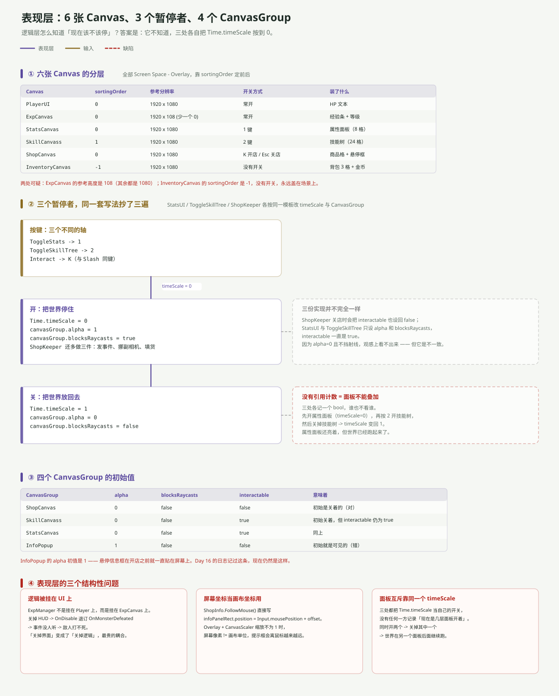

一句话说清
表现层是整个工程里唯一没有「模块」的地方：6 张 Canvas 并列、3 个暂停者各自为政、4 个 CanvasGroup 各管各的可见性。
它不参与战斗、不改数据，但它决定了三件很要命的事：谁画在前面、什么时候整个世界停住、以及逻辑脚本会不会因为 UI 被关掉而失效。
六张 Canvas，靠 sortingOrder 排队

全部是 Screen Space - Overlay（renderMode = 0），所以谁在前谁在后只看 sortingOrder：
| Canvas | sortingOrder | 参考分辨率 | 装了什么 |
|---|---|---|---|
InventoryCanvas | −1 | 1920×1080 | 背包 3 格 + 金币 |
PlayerUI | 0 | 1920×1080 | HP 文本 |
ExpCanvas | 0 | 1920×108 | 经验条 + 等级 |
StatsCanvas | 0 | 1920×1080 | 属性面板（8 格） |
ShopCanvas | 0 | 1920×1080 | 商品格 + 悬停框 |
SkillCanvass | 1 | 1920×1080 | 技能树（24 格） |
InventoryCanvas 用了 −1，意思是「永远在最底下、永远存在」——这也是它没有开关的直接原因。
ExpCanvas 的参考高度是 108，其余五张都是 1080。这是 Day 7 就记过的「少打一个 0」，现在仍然没改。今天没有可见后果，因为所有 CanvasScaler 的 matchWidthOrHeight 都是 0（按宽度匹配），高度值压根不参与计算——但哪天有人把一张改成按高度匹配，就会放大十倍。
三个暂停者：同一套模板抄了三遍
属性面板、技能树、商店都要「暂停世界」，三处实现几乎一模一样：
// StatsUI
if (Input.GetButtonDown("ToggleStats"))
{
if (statsOpen) { Time.timeScale = 1; statsCanvas.alpha = 0; statsCanvas.blocksRaycasts = false; statsOpen = false; }
else { Time.timeScale = 0; statsCanvas.alpha = 1; statsCanvas.blocksRaycasts = true; statsOpen = true; }
}ToggleSkillTree 和 ShopKeeper 里是同一段代码，只有轴名和 CanvasGroup 引用不同。
三者的差异只有一处：ShopKeeper 关店时会把 interactable 也设回 false，另外两个只设 alpha 和 blocksRaycasts。 因为 alpha = 0 且不挡射线，观感上看不出区别——但这是个实打实的不一致。
面板不能叠加，因为没有人记账
三个暂停者各自只有一个 bool：
private bool statsOpen = false; // StatsUI
private bool skillTreeOpen = false; // ToggleSkillTree
private bool isShopOpen; // ShopKeeper没有一处知道「现在有几层面板开着」。于是：
- 按
1开属性面板 →timeScale = 0 - 按
2开技能树 →timeScale仍是 0（看起来正常） - 关掉技能树 →
timeScale = 1
结果：属性面板还亮着，但世界已经跑起来了。 怪物继续走、继续打人，而玩家在看属性。
正确的写法是一个 PanelStack（或引用计数）：谁开谁 push，关的时候 pop，只有栈空了才把 timeScale 放回 1。
四个 CanvasGroup 的初始值
| CanvasGroup | alpha | blocksRaycasts | interactable | 意味着 |
|---|---|---|---|---|
ShopCanvas | 0 | false | false | 初始关着（正确） |
SkillCanvass | 0 | false | true | 关着，但 interactable 没关 |
StatsCanvas | 0 | false | true | 同上 |
InfoPopup | 1 | false | false | 初始就是可见的（错） |
InfoPopup 的 alpha = 1 意味着：开店之前，那个商品信息框就一直贴在屏幕上。 这是 Day 16 记过的坑，现在仍然是这样——ShopInfo.HideItemInfo() 只在鼠标移出商品格时才会被调用，没人负责初始化。
三个结构性问题
① 逻辑被挂在 UI 上
ExpManager 不是挂在 Player 上，也不是挂在一个空的 GameManager 上，而是挂在 ExpCanvas 这个 UI 物体上。
它的订阅写在 OnEnable / OnDisable：
private void OnEnable() { Enemy_Health.OnMonsterDefeated += GainExperience; }
private void OnDisable() { Enemy_Health.OnMonsterDefeated -= GainExperience; }于是：关掉 HUD → 退订 → 事件没人听 → 敌人打不死。
这不是边缘情况。ExpCanvas.SetActive(false) 是很正常的操作（截图、过场、看剧情），而它的后果是「怪物血量归零但还站着追你」。
把逻辑脚本挂在 UI 物体上，等于把逻辑的生命周期交给了 UI 的显隐。
② 屏幕坐标当画布坐标用
ShopInfo 让信息框跟着鼠标走：
public void FollowMouse()
{
Vector3 mousePosition = Input.mousePosition;
Vector3 offset = new Vector3(10, -10, 0);
infoPanelRect.position = mousePosition + offset;
}Input.mousePosition 是屏幕像素，而 RectTransform.position 是画布单位。当 CanvasScaler 的缩放因子不等于 1（参考 1920×1080，实际 1280×720 时 scaleFactor = 0.667），两者就不在同一个坐标系里。
结果：提示框会离鼠标越来越远，分辨率越低偏得越多。正确做法是 RectTransformUtility.ScreenPointToLocalPointInRectangle。
③ 面板互斥靠同一个 timeScale
见上一节的例子。三处共用 Time.timeScale 这一个全局变量，却各记各的 bool，没有仲裁者。
还有两个「看起来能用」的细节
属性面板只填了 2 个格子。 StatsUI.statsSlots 有 8 个元素，但 UpdateDamage() 只写 [0]、UpdateSpeed() 只写 [1]，剩下 6 格永远是占位文本。
ToggleSkillTree.statsCanvas 名不副实。 字段名叫 statsCanvas，实际指的是技能树的 CanvasGroup。从 StatsUI 那边复制过来忘了改名——和 Day 6 的 StatsManger 拼写错误是同一类问题。
表现层的接口清单
| 方向 | 接口 | 形态 |
|---|---|---|
| 入（数据 → UI） | StatsUI.UpdateAllStats() | 被动调用（只在 Start 与 UpdateSpeed 里调） |
| 入（事件 → UI） | ExpManager.UpdateUI() | 自己刷自己 |
| 入（输入 → UI） | GetButtonDown("ToggleStats"/"ToggleSkillTree"/"Interact") | 轮询 |
| 出（UI → 全局） | Time.timeScale = 0 / 1 | 全局副作用 |
| 出（UI → 逻辑） | 游戏物体 SetActive(false) | 隐式：会连带停掉挂在它上面的脚本 |
最后一行是整个表现层最危险的地方：SetActive 在 Unity 里不只是「隐藏」，它会触发 OnDisable、会停掉协程、会让事件订阅消失。 而 UI 的显隐是最容易被随手改的东西。
一句话总结
表现层真正的问题不是「画得怎么样」，而是三件事被混在了一起：显隐、暂停、事件订阅。三者都挂在 SetActive / timeScale 这两个全局开关上，而没有任何一层负责仲裁。
想让它稳下来，只需要两个小类：一个 PanelManager（管栈和 timeScale），一个挂逻辑的 GameManager 空物体（把 ExpManager 从 ExpCanvas 上搬下来）。
下一篇：关卡与相机。